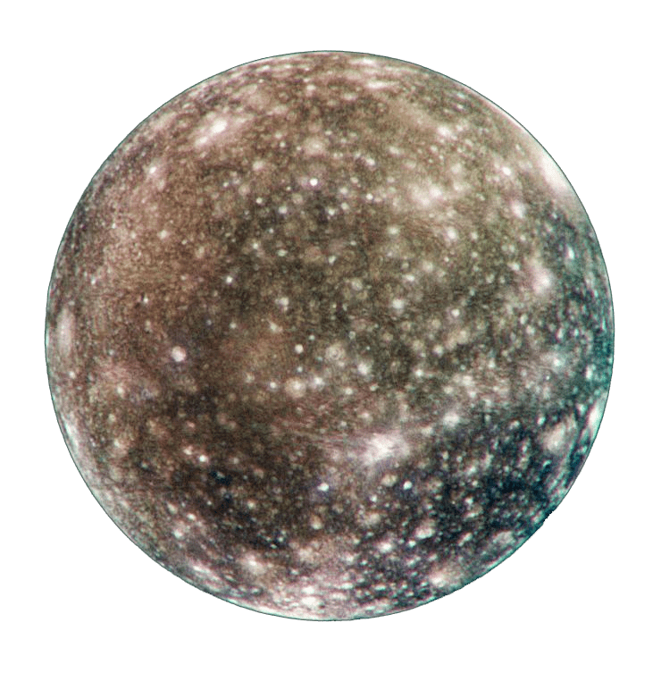

Callisto
| Dati Principali | |
|---|---|
| Pianeta madre | Giove |
| Diametro | 4.821 km |
| Massa | 1,08 × 10²³ kg |
| Distanza da Giove | 1.882.700 km |
| Periodo orbitale | 16,69 giorni |
| Superficie | Fortemente craterizzata, ricca di ghiaccio |
| Atmosfera | Molto tenue, con tracce di CO2 e ossigeno |


Struttura di Callisto
Callisto ha una struttura relativamente omogenea con un miscuglio di ghiaccio e roccia. Non possiede un nucleo ben definito.
Si pensa che al di sotto della crosta ghiacciata possa esistere un oceano liquido salato. La mancanza di attività geologica suggerisce che è rimasto geologicamente inattivo per miliardi di anni.
Curiosità su Callisto
- 🪐 È il terzo satellite naturale più grande del Sistema Solare.
- 🌌 La sua superficie è una delle più antiche e craterizzate mai osservate.
- 🔭 Fu scoperto da Galileo Galilei nel 1610 insieme a Io, Europa e Ganimede.
- 🛰️ È considerato uno dei candidati ideali per una futura base spaziale, grazie alla bassa radiazione.